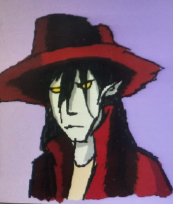
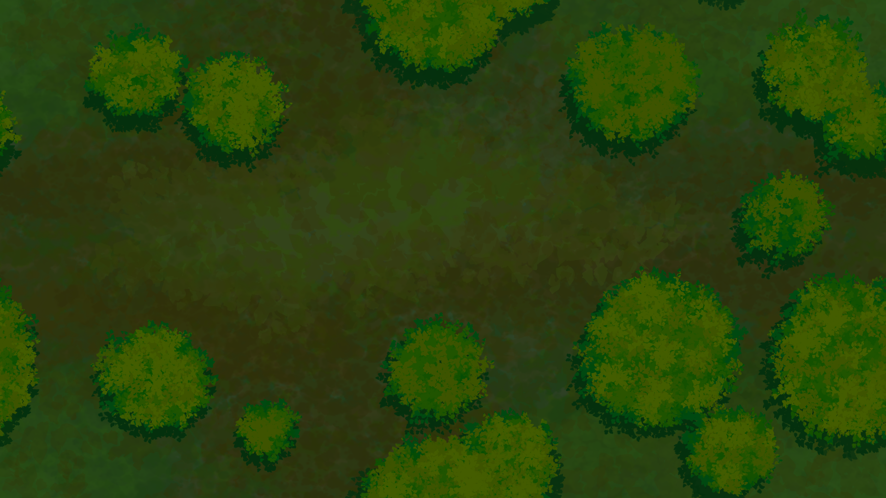
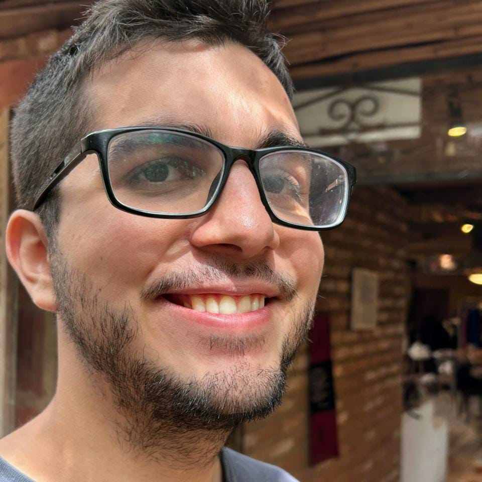
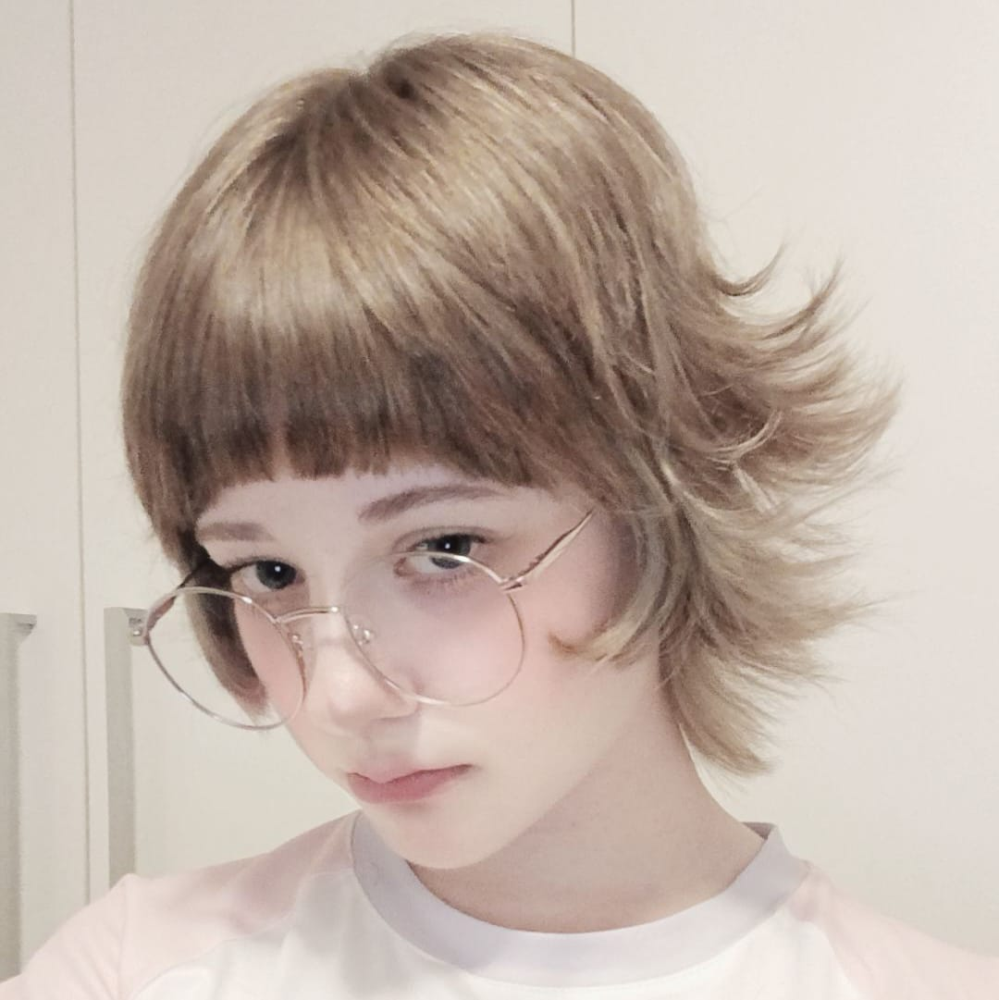

Sobre o Jogo
Salem's Halloween é um jogo Top-Down de ação com elementos Rogue-lite, onde você assume o papel de um caçador de monstros em uma região amaldiçoada. Derrote inimigos, acumule forças e avance pela região em busca do monstro que ameaça a vida das comunidades vizinhas.
Contexto
O jogador controla um caçador de monstros que viaja por regiões amaldiçoadas em busca de criaturas perigosas que ameaçam a vida das regiões vizinhas. O jogo se passa em um contexto histórico inspirado no período da colonização Americana, combinando elementos históricos com uma atmosfera sobrenatural e misteriosa.
Diferencial
Durante suas caçadas, a sobrevivência do jogador estará sujeita à sorte. Para aumentar suas chances de sobreviver aos próximos desafios, será possível encontrar e recuperar artefatos mágicos capazes de favorecer os dados da sorte ao seu lado. Dessa forma, cada decisão e cada nova expedição podem trazer diferentes desafios e possibilidades.
Personagem
Lucius, o Vampiro

Lucius é um jovem vampiro e um dos caçadores que se aventuram pelas regiões amaldiçoadas. Durante o Festival da Colheita, ele viaja até Salem para enfrentar as criaturas sobrenaturais que tomaram a cidade e pôr fim à ameaça que assola a região. Com 1,85 m de altura e pele azulada, Lucius possui cabelos pretos e lisos que chegam aos ombros, olhos completamente amarelos e longas orelhas pontudas. Ele veste um grande chapéu vinho e um sobretudo da mesma cor, acompanhado de uma camisa preta, calça elegante e um cinto de couro branco com fivela prateada. Completa o visual com botas de couro marrom-escuro adornadas com desenhos. Em combate, Lucius utiliza uma rapieira mágica flutuante de prata, cuja empunhadura é feita de ferro escuro e possui uma pedra vermelha brilhante em seu centro. A arma acompanha o vampiro durante sua jornada enquanto ele enfrenta as criaturas que invadiram Salem.
Cenário
A cidade de Salem

A aventura de Salem's Halloween acontece na cidade de Salem durante o tradicional Festival da Colheita. Todos os anos, a população se reúne para celebrar a colheita e seguir antigas tradições destinadas a proteger a cidade contra espíritos e maus agouros. Porém, naquele ano, as tradições foram ignoradas. Com a chegada do festival, espíritos, mortos-vivos e outras criaturas sobrenaturais invadem Salem em busca de sua própria colheita. A cidade, antes tomada pelas celebrações, transforma-se em uma região amaldiçoada e perigosa, onde cada caminho pode esconder uma nova ameaça. É nesse cenário que o caçador de monstros deverá atravessar a cidade, enfrentar as criaturas que a tomaram e chegar ao responsável por aquela terrível noite: o infame Jack o' Demon.
Imagens
Galeria
Confira imagens, artes e outros conteúdos produzidos pela equipe durante o desenvolvimento de Salem's Halloween.


Integrantes
Nossa Equipe
Conheça os integrantes responsáveis pelo desenvolvimento de Salem's Halloween.

Rafael Ugrin Magalhães
Itch.io: https://rafagron.itch.io
E-mail: rafagron2003@hotmail.com

Amanda Campos Corrêa
Itch.io: https://miichaelisz.itch.io
E-mail: amandacampos.dev@gmail.com